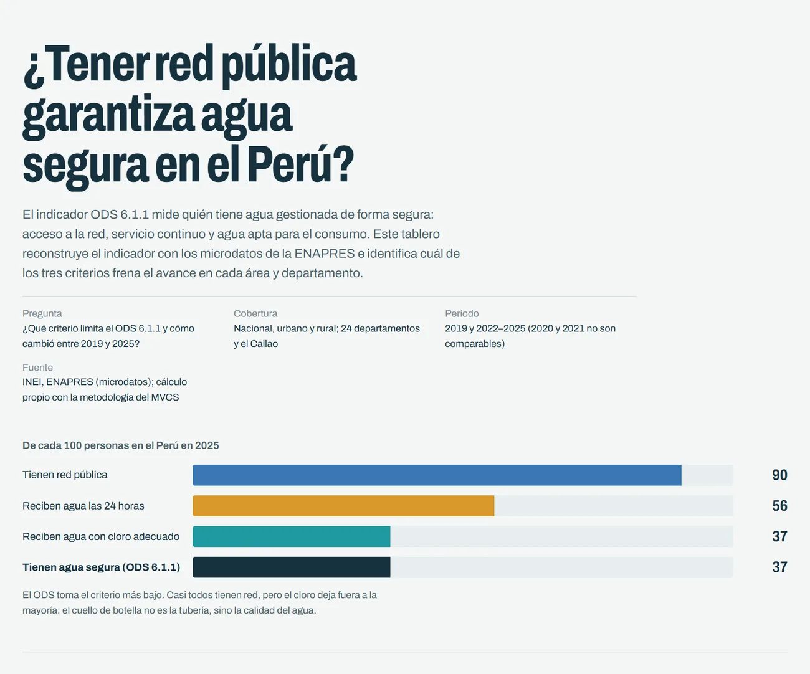
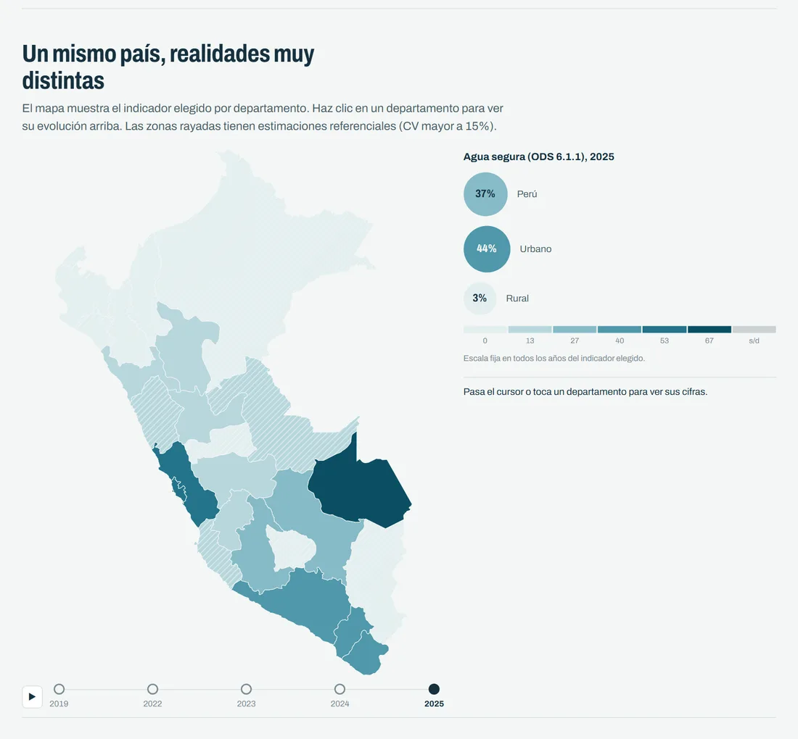

Pregunta
¿Qué criterio de agua segura (red pública, continuidad o cloración) limita el ODS 6.1.1 en el Perú, y cómo cambió entre 2019 y 2025 en las áreas urbanas y rurales y en los departamentos?
Datos y método
Microdatos de la ENAPRES (INEI) 2019 y 2022–2025. Reconstruí el indicador con la metodología del Ministerio de Vivienda, lo desagregué por área y departamento, y lo validé contra las cifras oficiales del MVCS y del INEI.
Resultado
El agua segura cayó de 41,5 % a 36,6 %: 2,7 millones de personas más sin ella. El cloro, no la tubería, es el cuello de botella.
- En las ciudades, la caída de 7,5 puntos se explica por el cloro (51,8 % → 44,3 %).
- En el campo aumentaron la red y la continuidad, pero el agua con cloro adecuado sigue en torno al 3 %: 6,2 de 6,4 millones de personas rurales no tienen agua segura.


Reel
¿Tener red es tener agua segura?
Solo 37 de cada 100 peruanos tienen agua segura. ENAPRES 2025.
Voz generada con IALa narración es mi propia voz clonada con IA (Qwen3-TTS).